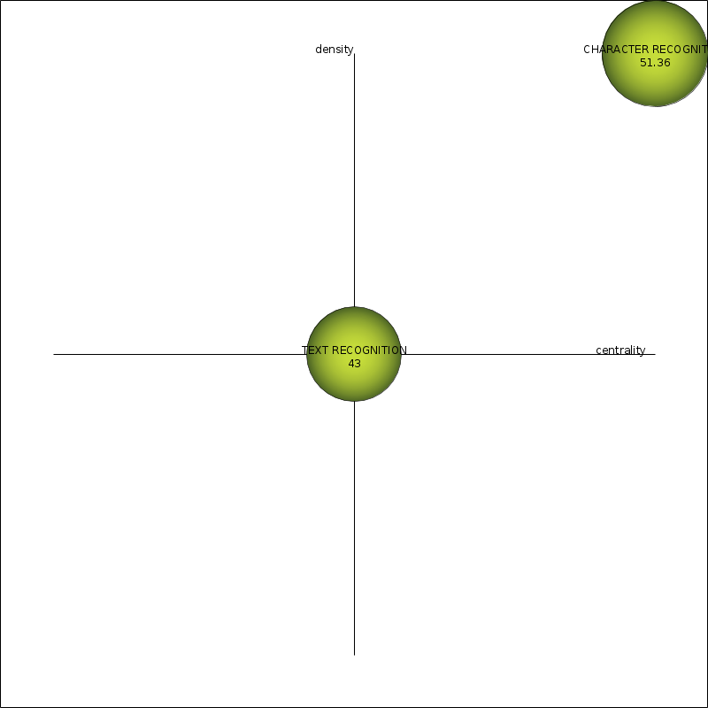
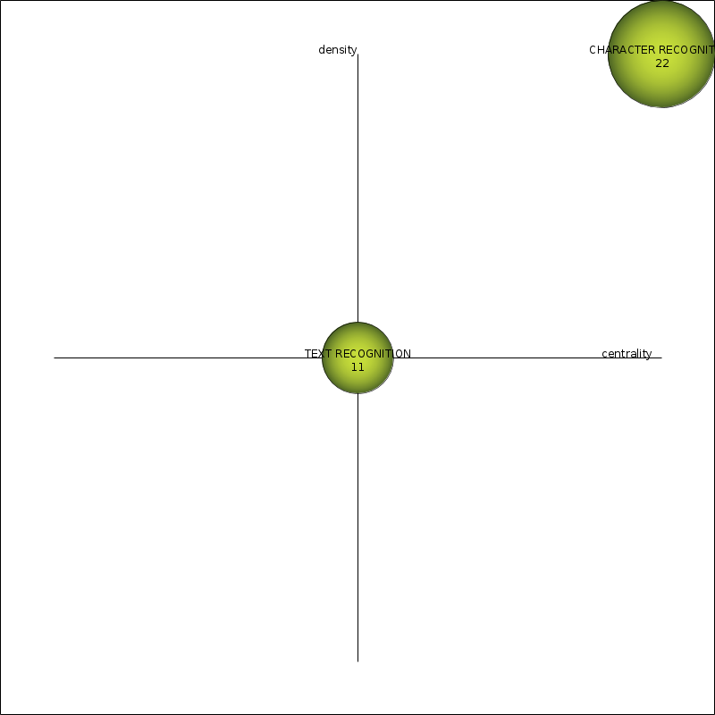
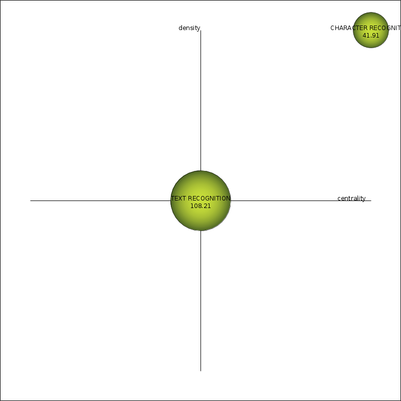
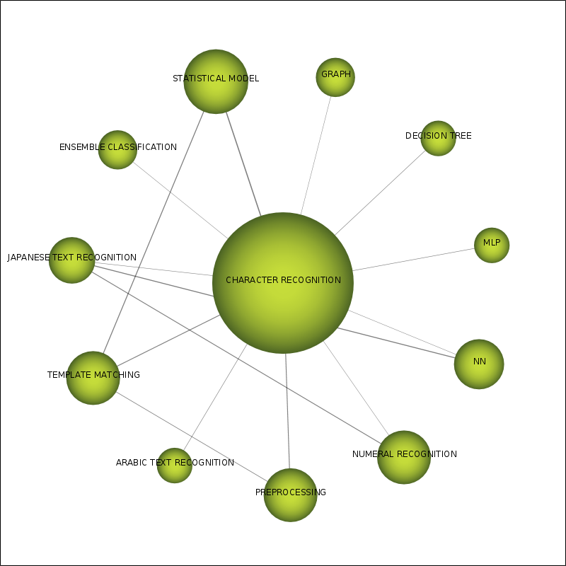

| Performance measure | Strategic diagram |
| coreDocuments-documentsCount | |
| coreDocuments-hIndex | |
| coreDocuments-averageCitations |  |
| coreDocuments-sumCitations | |
| unionDocuments-documentsCount | |
| unionDocuments-hIndex |  |
| unionDocuments-averageCitations |  |
| unionDocuments-sumCitations |
| Name | Centrality | Centrality range | Density | Density range |
| CHARACTER RECOGNITION | 8.32 | 1 | 10.45 | 1 |
| TEXT RECOGNITION | 0.54 | 0.5 | 7.41 | 0.5 |
| Name | coreDocumentsdocumentsCount | coreDocumentshIndex | coreDocumentsaverageCitations | coreDocumentssumCitations | unionDocumentsdocumentsCount | unionDocumentshIndex | unionDocumentsaverageCitations | unionDocumentssumCitations |
| CHARACTER RECOGNITION | 25 | 17 | 51.36 | 1,284 | 44 | 22 | 41.91 | 1,844 |
| TEXT RECOGNITION | 3 | 3 | 43 | 129 | 14 | 11 | 108.21 | 1,515 |
| Name | Cluster's network |
| CHARACTER RECOGNITION |  |
| TEXT RECOGNITION |  |